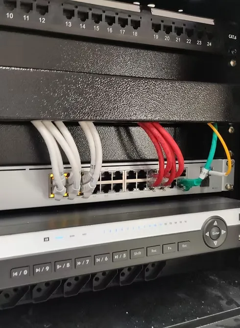

Redes e infraestrutura
Uma rede preparada para conectar seu negócio.
Projeto, instalação, manutenção e gerenciamento da infraestrutura de rede da sua empresa.

Como podemos ajudar
Serviços para a sua rotina.
Conheça os serviços oferecidos pela Microgate.
- Visitas de manutenção corretiva ilimitadas
- Visitas preventivas a cada 7 dias
- Gerenciamento de REDE
- Projeto de sua rede a partir do zero
- Instalação e Manutenção de redes com cabeamento
- Instalação e Manutenção de redes Wireless
- Projeto de rede sem fio a longa distância
- Organização de RACKS com padrões mundiais
- Certificação de REDES
- Programação de BACKUP para redes
- Configuração de redundância
- Configuração de Roteadores e Switches
- Configurações de Firewall
Conte com a Microgate
Converse sobre a sua infraestrutura.
Fale com a Microgate sobre as necessidades da sua empresa.